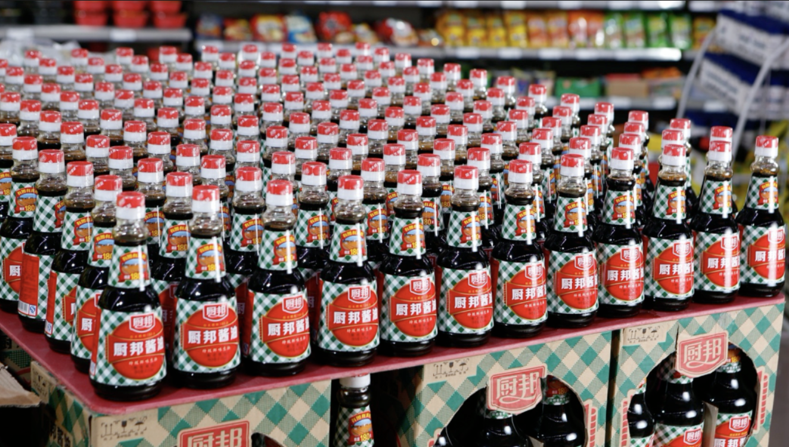
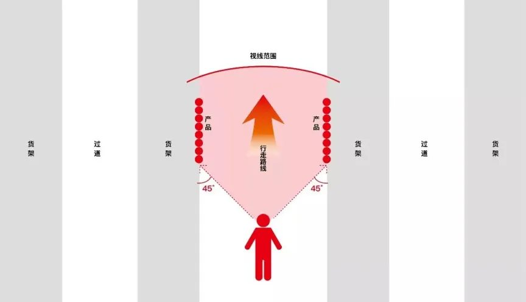
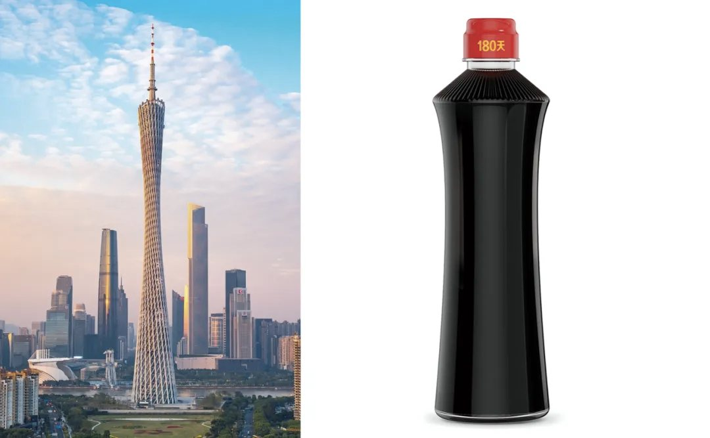
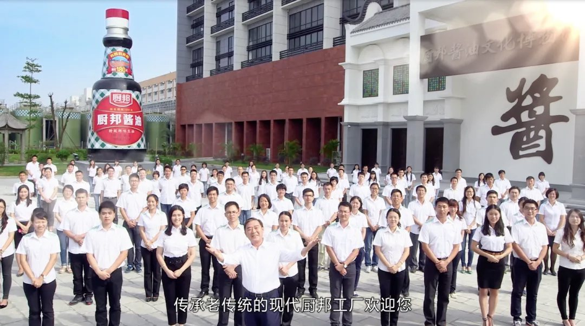

01 · 符号
先用超级符号奠定品牌基业
厨邦绿格子形成醒目、可重复、可扩展的识别。长期合作没有不断推翻这一资产，而是持续增加它在包装、终端和传播中的使用强度。

02 · 包装
让包装在货架上完成识别与销售
包装围绕远距离识别、产品信息和购买理由持续改善，使每个SKU既有品类差异，又共同积累厨邦品牌。

03 · 改善
到现场解决影响增长的具体问题
持续改善把战略落实到陈列、物料、销售工具和组织执行。小问题逐项解决，长期叠加为管理和市场效率。

04 · 经营
用营销日历与餐饮渠道建立稳定节奏
年度活动、终端推广与餐饮渠道围绕共同主题组织，使品牌传播与渠道任务不再零散。

05 · 产品
用同一品牌系统支持多品类发展
从酱油主业向鸡粉、罐头、食用油和复合调味料等品类延伸时，产品开发继续使用既有符号和品牌方法，降低新品进入市场的认知成本。
